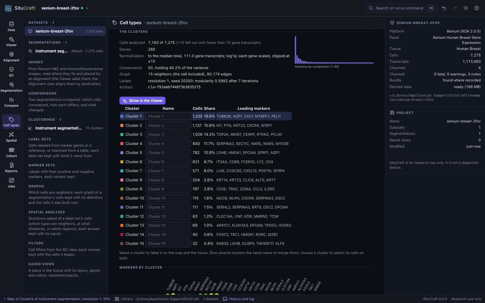
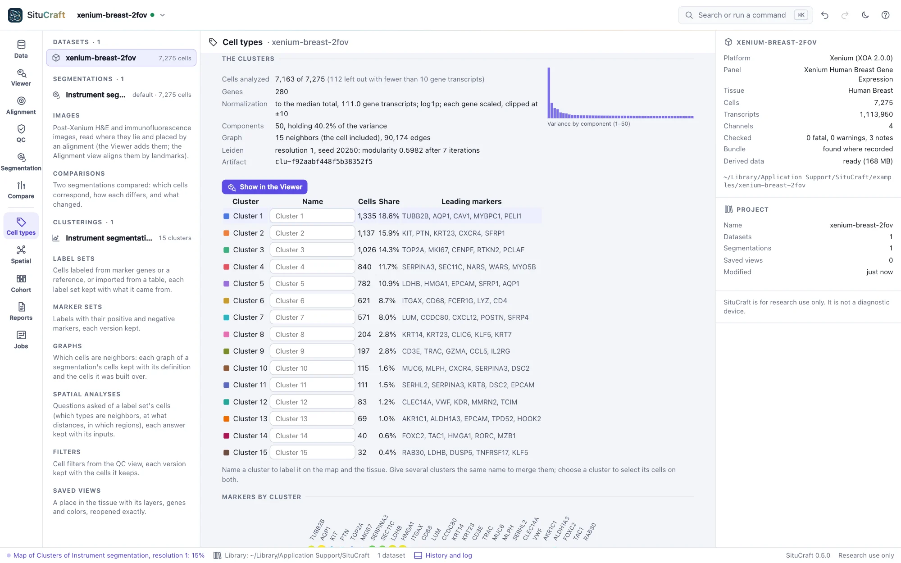
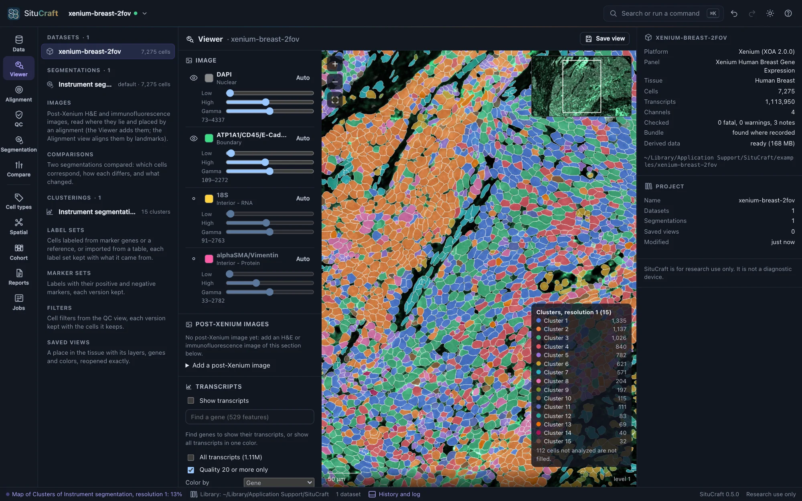
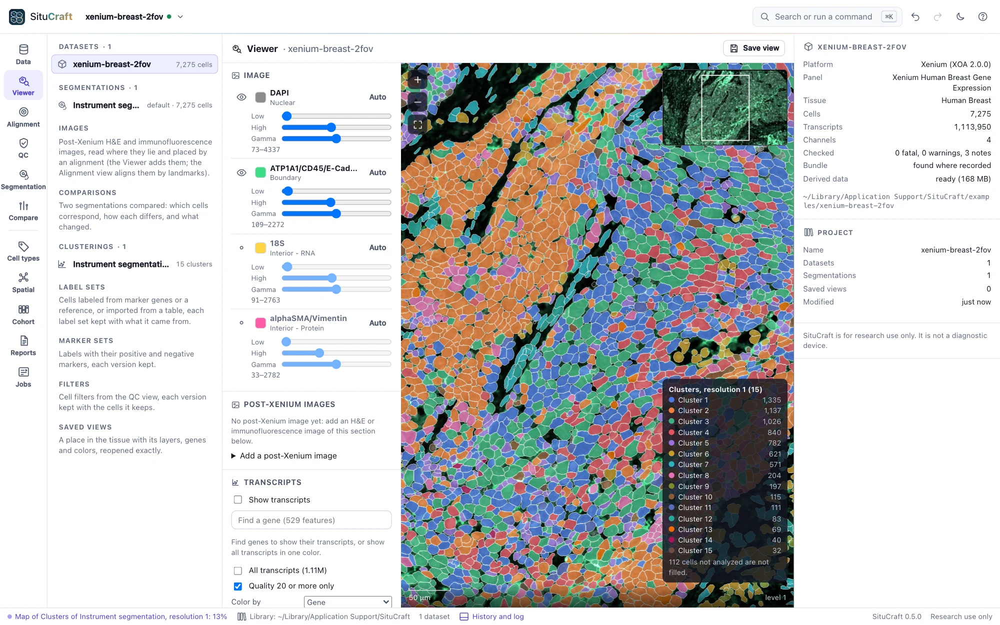
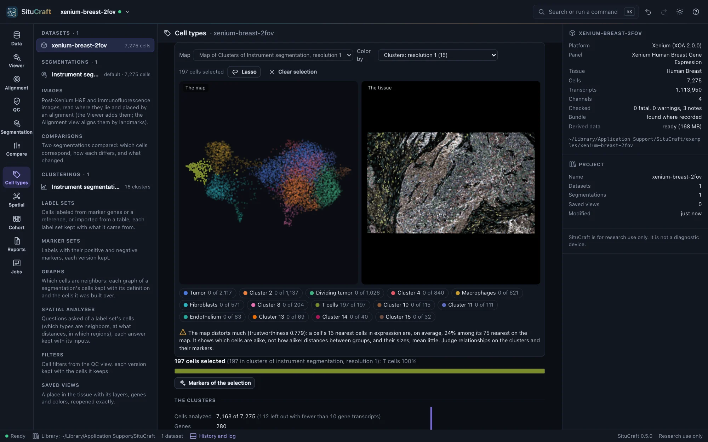
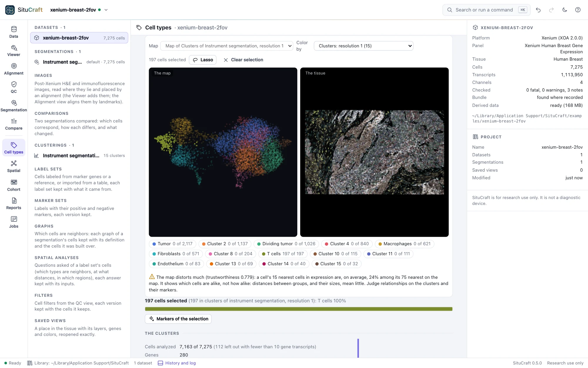

Clusters and the map
Cell types begin with clusters: cells grouped by their expression as scanpy groups them, each cluster with its markers, and a map of the cells beside the tissue, linked to it.
Clustering the cells
The Cell types view groups a segmentation's cells by their gene expression, the first step toward naming them. Choose the segmentation (the default to start) and the cells to analyze: those with at least 10 gene transcripts, or, for the instrument's segmentation, the cells one of your QC filters keeps. Cluster the cells runs the common single-cell workflow as a job (about a second for the examples):
- each cell's counts scaled to the median total and log-transformed;
- each gene scaled, so that every gene counts alike;
- principal components (50), computed exactly;
- each cell's 15 nearest neighbors in them, as a graph;
- Leiden communities of the graph: the clusters, numbered from the largest.
The same steps serve a whole section: above 50,000 cells the nearest neighbors are found by NN-Descent rather than by comparing every pair (the clustering says how many of the exact neighbors it found, measured on 1,000 of its cells: 99.9% on the examples), the map is laid out over every core, and for panels of more than 1,000 genes (Xenium Prime) the components are found by the Lanczos method, the full decomposition's to rounding.
Parameters
Parameters shows each setting with what it does. They are scanpy's defaults, so the numbers match what the scanpy tutorials give. Resolution is the one you will change most: higher gives more and smaller clusters. There is no right value; make a few and compare their markers. Each clustering is kept as an artifact of its segmentation with every parameter and its seed, and the same seed gives the same clusters on any computer. Asking for one already made answers it at once.
The clusters


Under each clustering are its numbers (the cells analyzed and left out, the components' share of the variance, the graph and the modularity Leiden reached) and its clusters, each with its size and leading markers. Choose a cluster to see its markers against all the other cells: how much higher its expression is (log₂ fold change), the share of cells expressing the gene in and out of it, and the rank-sum test's score and adjusted p-value. These are exploratory: the cells of one tissue are not independent replicates, so the p-values rank genes rather than test them.
Show in the Viewer opens the Viewer with the cells filled by cluster and a legend. The Viewer's Fill by lists every clustering of the segmentation drawn, and a saved view keeps the one shown.


The map and the tissue


Each clustering comes with a map (UMAP, made at once, a few seconds for the examples): cells with similar expression lie near each other. It sits beside the tissue, and the two are linked:
- Color by a clustering's clusters (any clustering of the segmentation), a gene (type its name), the cells' gene transcripts or area, or how faithfully the map keeps each region's neighbors.
- Select cells on either side with the Lasso (shift adds to the selection), or by clicking a cluster in the legend or the table: the cells are selected on both, the others faint. Click a cell on the map to find it on the tissue, or on the tissue to mark it on the map.
- Markers of the selection compares the selected cells with the clustering's other cells, as the clusters' markers are computed: what distinguishes a region you drew.
A map shows which cells are alike, not how alike: distances between groups, and their sizes, mean little. Under the map, SituCraft says how far this one can be trusted, from its trustworthiness and how many of each cell's nearest neighbors in expression stay near it on the map.
Names
Name clusters in the table (a T-cell cluster, a tumor cluster): names show on the map, the tissue and the legends, and giving several clusters the same name merges them. Each change is a new version of the names, kept in the project's history; the clusters keep their numbers. The dot plot shows each cluster's two leading markers across all clusters: dot size, the share of cells expressing the gene; color, its mean expression.
The instrument's clusters
The instrument's clusters: the bundle holds the instrument's own analysis (graph-based clusters, and k-means for 2 to 10 clusters, with its own map). Add one to explore it here like any clustering (SituCraft computes its markers), and the instrument's map comes with the first. Two clusterings compared cross-tabulates any two clusterings of the same cells, with the adjusted Rand index (1: the same partition; about 0: as alike as chance).